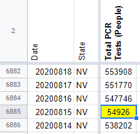
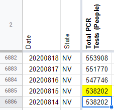

[NV] Total PCR Tests (People) input incorrectly on 8/15
Issue number 768
brianskli opened this issue on August 16, 2020 at 2:46 pm
Labels Historical Data not stale
State or US: Nevada
Describe the problem A digit was missed while inputting Total PCR Tests (People) on 8/15, resulting in underreporting. This value should be edited in States Daily.
Link to data source https://app.powerbigov.us/view?r=eyJrIjoiMjA2ZThiOWUtM2FlNS00MGY5LWFmYjUtNmQwNTQ3Nzg5N2I2IiwidCI6ImU0YTM0MGU2LWI4OWUtNGU2OC04ZWFhLTE1NDRkMjcwMzk4MCJ9
Comments
the-daniel-lin commented on September 11, 2020 at 10:10 am
Since we do not have a reliable source from which to backfill this value, we are carrying over the testing value from 8/14 (538202).
BEFORE: 
the-daniel-lin commented on September 11, 2020 at 10:10 am
AFTER: 
This issue is complicated by the fact that we do not have a screenshot or reliably historical source for Total PCR Tests (People), normally found on p.3 of the dashboard